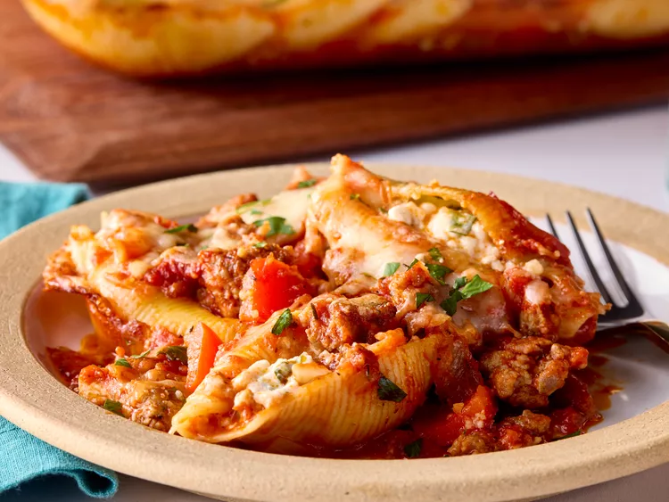
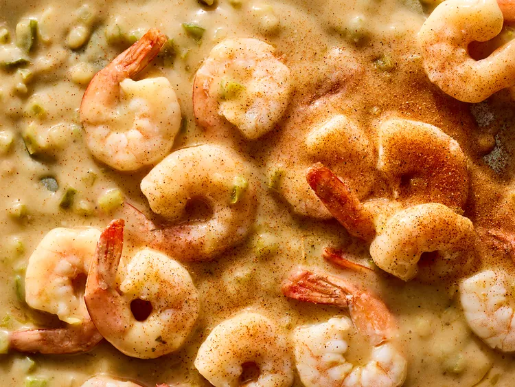

Cheesy Lasagna Sheet Pasta
Prep Time: 5 mins
Cook Time: 15 mins
Total Time: 20 mins

Ingedidents
- 2 pounds lasagna noodles, broken in half
- 4 (24-ounce) jar tomato sauce
- 2 pounds shredded whole milk mozzarella cheese
Directions
- Bring a large pot of lightly salted water to a boil. Cook lasanga
noodles in the boiling water, stirring occasionally, until tender yet
firm to the bite, 10 to 12 minutes.
- Strain noodles and return to the pot. Add tomato sauce and cook on
medium heat until sauce is heated through, about 5 minutes.
- Add cheese and stir until cheese is melted. Serve immediately.
Million Dollar Stuffed shells
Prep Time: 5 mins
Cook Time: 15 mins
Total Time: 20 mins

Ingredients
- 3 pounds dried jumbo shell macaroni
- 4 pounds bulk Italian sausage
- 4 cups chopped onion
- 4 cups chopped onion
- 3 cloves garlic, minced
- 4 (24-ounce) jar marinara sauce
- 8 teaspoons Italian seasoning
- 2 teaspoons crushed red pepper (optional)
- 4 (16-ounce) container cottage cheese
- 8 cups shredded mozzarella cheese, divided
- 2 cups grated Parmesan cheese, divided
- 1 cup chopped fresh parsley, plus more for garnish
Directions
-
Gather all ingredients. Preheat the oven to 375 degrees F
(190 degrees C).
-
Bring a large pot of water to a boil. Cook pasta 2 minutes less than
package directions. Drain and rinse with cold water until cool.
-
Meanwhile, heat a large skillet over medium heat. Add Italian
sausage, onion, bell pepper, and garlic; cook and stir until
sausage is browned and fully cooked.
-
Add marinara sauce, Italian seasoning, and crushed red pepper, if
using. Cook over medium heat for 10 minutes, stirring occasionally,
to meld flavors.
- Spread 2 cups sauce in the bottom of a 9x13-inch baking dish.
-
Combine cottage cheese, 1 cup mozzarella cheese, 1/4 cup Parmesan
cheese, and parsley in a bowl.
-
Divide cheese mixture between pasta shells, stuffing with 1 scant
tablespoon per shell.
- Arrange shells evenly over sauce in the baking dish.
-
Spoon remaining sauce over shells and sprinkle with remaining
mozzarella and Parmesan cheese.
-
Bake, uncovered, until cheese is melted and sauce is bubbly,
25 minutes. Tent loosely with foil if it starts to get overbrowned.
- Garnish with additional parsley.
Prep Time: 5 mins
Cook Time: 15 mins
Total Time: 20 mins

Ingredients
- 12 tablespoons butter
- 1 cup chopped onion
- 1 cup chopped celery
- 1 cup chopped green bell pepper
- 12 tablespoons flour
- 8 cups low-sodium chicken broth
- 4 teaspoons Cajun-style seasoning
- 8 dashes hot sauce (such as Tabasco), or more to taste
Directions
-
Melt butter in a medium saucepan over medium-low heat. Add onion,
celery, and bell pepper; cook, stirring occasionally, until softened
, about 8 minutes.
-
Whisk in flour. Cook, whisking constantly, until pale golden in
color with a lightly nutty aroma, 3 to 4 minutes.
-
Whisk in broth. Bring mixture to a simmer; simmer, uncovered,
stirring occasionally, until reduced by half (to about 1 1/4 cups)
and sauce coats the back of a spoon and holds a line when you draw
a finger through it, about 30 minutes. Whisk in Cajun seasoning and
hot sauce.